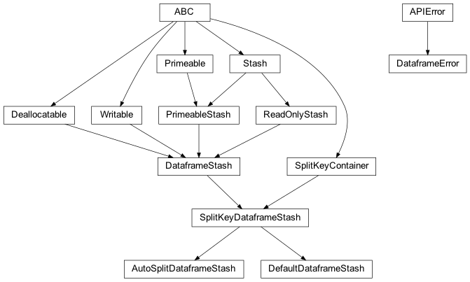

zensols.dataframe package¶
Submodules¶
zensols.dataframe.stash¶

Stashes that operate on a dataframe, which are useful to common machine learning tasks.
-
class
zensols.dataframe.stash.AutoSplitDataframeStash(dataframe_path, key_path, split_col, distribution)[source]¶ Bases:
zensols.dataframe.stash.SplitKeyDataframeStashAutomatically a dataframe in to train, test and validation datasets by adding a
split_colwith the split name.-
__init__(dataframe_path, key_path, split_col, distribution)¶ Initialize self. See help(type(self)) for accurate signature.
-
-
exception
zensols.dataframe.stash.DataframeError[source]¶ Bases:
zensols.util.APIErrorThrown for dataframe stash issues.
-
__module__= 'zensols.dataframe.stash'¶
-
-
class
zensols.dataframe.stash.DataframeStash(dataframe_path)[source]¶ Bases:
zensols.persist.domain.ReadOnlyStash,zensols.persist.dealloc.Deallocatable,zensols.config.writable.Writable,zensols.persist.domain.PrimeableStashA factory stash that uses a Pandas data frame from which to load. It uses the data frame index as the keys and
pandas.Seriesas values. The dataframe is usually constructed by reading a file (i.e.CSV) and doing some transformation before using it in an implementation of this stash.The dataframe created by
_get_dataframe()must have a string or integer index since keys for all stashes are of typestr. The index will be mapped to a string if it is an int automatically.-
__init__(dataframe_path)¶ Initialize self. See help(type(self)) for accurate signature.
-
clear()[source]¶ Delete all data from the from the stash.
Important: Exercise caution with this method, of course.
-
property
dataframe¶
-
dataframe_path: pathlib.Path¶ The path to store the pickeled version of the generated dataframe created with
_get_dataframe().
-
exists(name)[source]¶ Return
Trueif data with keynameexists.Implementation note: This
Stash.exists()method is very inefficient and should be overriden.- Return type
-
load(name)[source]¶ Load a data value from the pickled data with key
name. Semantically, this method loads the using the stash’s implementation. For exampleDirectoryStashloads the data from a file if it exists, but factory type stashes will always re-generate the data.- See
get()- Return type
-
write(depth=0, writer=<_io.TextIOWrapper name='<stdout>' mode='w' encoding='utf-8'>)[source]¶ Write the contents of this instance to
writerusing indentiondepth.- Parameters
depth (
int) – the starting indentation depthwriter (
TextIOBase) – the writer to dump the content of this writable
-
-
class
zensols.dataframe.stash.DefaultDataframeStash(dataframe_path, key_path, split_col, input_csv_path)[source]¶ Bases:
zensols.dataframe.stash.SplitKeyDataframeStashA default implementation of
DataframeSplitStashthat creates the Pandas dataframe by simply reading it from a specificed CSV file. The index is a string type appropriate for a stash.-
__init__(dataframe_path, key_path, split_col, input_csv_path)¶ Initialize self. See help(type(self)) for accurate signature.
-
input_csv_path: pathlib.Path¶ A path to the CSV of the source data.
-
-
class
zensols.dataframe.stash.SplitKeyDataframeStash(dataframe_path, key_path, split_col)[source]¶ Bases:
zensols.dataframe.stash.DataframeStash,zensols.dataset.interface.SplitKeyContainerA stash and split key container that reads from a dataframe.
-
__init__(dataframe_path, key_path, split_col)¶ Initialize self. See help(type(self)) for accurate signature.
-
clear()[source]¶ Delete all data from the from the stash.
Important: Exercise caution with this method, of course.
-
key_path: pathlib.Path¶ The path where the key splits (as a
dict) is pickled.
-
write(depth=0, writer=<_io.TextIOWrapper name='<stdout>' mode='w' encoding='utf-8'>)[source]¶ Write the contents of this instance to
writerusing indentiondepth.- Parameters
depth (
int) – the starting indentation depthwriter (
TextIOBase) – the writer to dump the content of this writable
-